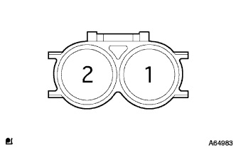

クランクポジション センサ 単体点検
印刷
準備品一覧
1. クランクポジション センサ

抵抗点検
SST(トヨタエレクトリカルテスタ)を使用して、端子間の抵抗を測定する。
SST
09082-00030
09083-00150
基準値
985-1600Ω(冷間時)
1265-1890Ω(温間時)
■ 注 意 ■
文中の冷間時、温間時とは、点検する部品本体の温度を表す。また、温度設定範囲を冷間時(-10°C以上50°C以下)、温間時(50°C以上100°C以下)とする。